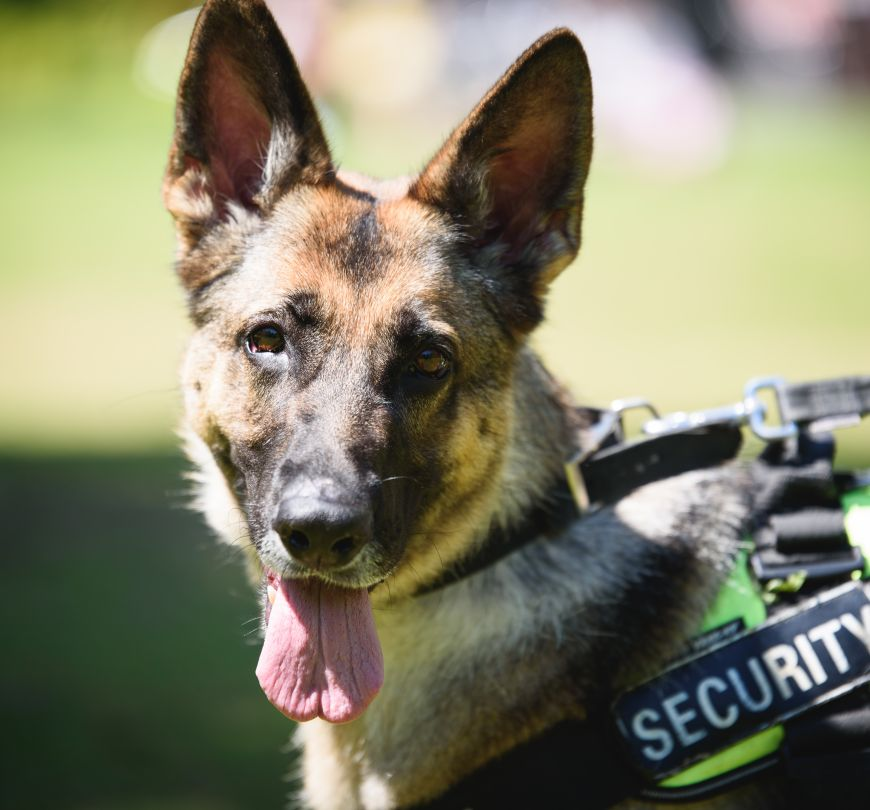
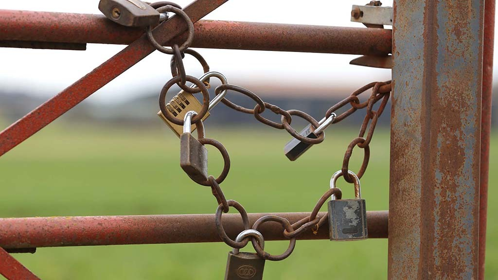

K-9 Unit
As Dog guarding has become ever more necessary for the protection of vulnerable premises and ensuring public safety. With A4S K-9 Unit Patrol Units, You get Guaranteed Reliable, unbeatable Security Dog Services. Security Dogs effectively complement the skills of security officers, naturally offering higher levels of threat detection and, therefore, faster response. Our K-9 Security is dedicated to safeguarding commercial and residential premises, valuable assets, venues and projects from theft, vandalism and trespass.

Farm Specific Security
Keep your agricultural and farming operations protected with our range of tailored farm security - Available UK Wide. A4S offer a range of services Ensuring equipment critical to the efficiency of your business is protected from opportunistic thieves and trespassing vandals. Our mobile patrol vehicles can provide security across vast sites or multiple properties, With an average agreed response time, you can relax in the knowledge that our security team will be on stand-by to investigate any incidents that occur at your premises, no matter the time of day or night.
Our Promise
We understand that everyone will have specific needs when it comes to security services, that is why at A4S we fully tailor our services and roles to meet your requirements professionally and efficiently in all available sectors of the security industry.
All Our Employees undergo Baseline Personnel Security Standard screening checks for working in the Public Sector, British Standard 7858 screening (with SIA Approved Contractor Scheme requirements), with pre-employment checks, ISO9001 and NCP11 for BS7858:2019 vetting, also ISO27001 for Information Security through ACM.